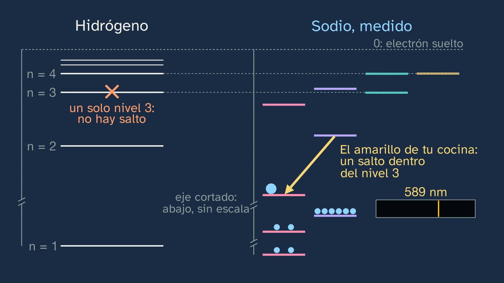
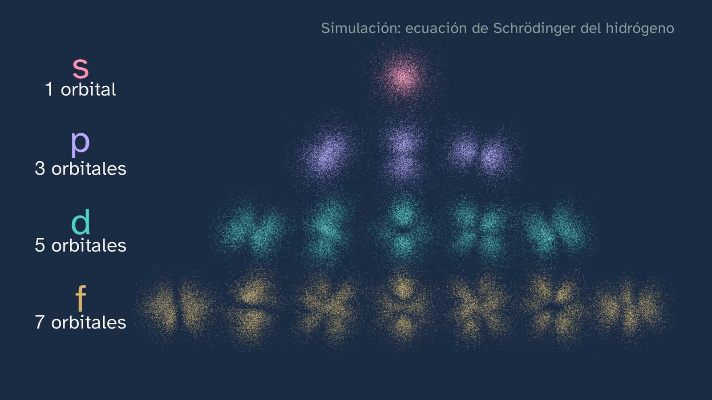

Capas, subniveles y el orden de llenado
En pocas palabras
Es la clase en que se escribe la configuración electrónica, y lo hace partiendo de algo que el alumnado tiene en casa: la sal. Si se sale la olla, la llama se pone amarilla, y esa luz es un salto de un átomo de once electrones. La clase 3 dejó dicho que el modelo de Bohr sólo acertaba con un electrón; aquí se ve por qué, con datos medidos.
Se pone la escalera medida del sodio, entera, al lado de la del hidrógeno, a la misma escala y con los niveles 1 y 2 tras un corte del eje. El nivel 3 se desdobla en tres, y el amarillo de la cocina resulta ser un salto dentro de ese nivel: con un nivel para cada número, no existiría. De ahí salen las capas y los subniveles, y de ahí salen también las letras: s, p, d y f son lo que queda de las rayas nítidas (sharp), principales, difusas y fundamentales que describieron los espectroscopistas.
Después, el orbital: una nube de probabilidad, no un camino. Se construye a la vista, mirada a mirada, y se desmonta el error de los planetas con lo que el alumnado ya sabe de la clase 3. Cada subnivel tiene 1, 3, 5 o 7 orbitales, y la escalera del sodio se ve con sus nubes puestas. En cada orbital caben dos electrones (Pauli, que partió de las rayas dobles de esta misma familia): de ahí el espín y la dirección de cuatro datos de cada electrón, capa, subnivel, orbital y espín. Y de ahí salen el 2, el 6, el 10 y el 14.
Con eso se explica por qué se desdobla un nivel (las tres nubes del nivel 3, a la misma altura en el hidrógeno; en el sodio, +11 − 10 = +1, el apantallamiento: el 3d no entra entre los diez electrones de dentro y se queda casi en su sitio; el 3p entra un poco y baja; el 3s entra más, con su anillo pequeño, y baja mucho: la penetración) y se llega al orden de llenado y a la regla de las diagonales, que se presenta como lo que es: una regla práctica. Se escribe el sodio entero, el cloro con un hueco y el potasio a solas, y se pasa a los iones, que resultan ser la propia sal.
Todo eso se comprueba: la energía de arrancar los electrones del sodio enseña sus capas (1, 8 y 2), y un espectro de fotoelectrones lee 2, 2, 6 y 1. La clase contesta a su gancho con honradez: los niveles de Bohr se quedaron y se desdoblaron, y sus órbitas se tiraron.
Currículo
- Saber básico (bloque A): «Estructura electrónica de los átomos tras el análisis de su interacción con la radiación electromagnética: explicación de la posición de un elemento en la tabla periódica y de la similitud en las propiedades de los elementos químicos de cada grupo».
- Competencias específicas: CE1 (explicar fenómenos cotidianos con leyes y teorías), CE2 (formular hipótesis y validarlas con la búsqueda de evidencias) y CE3 (interpretar información en distintos formatos, como configuraciones, escaleras de energía y gráficas).
- Criterios de evaluación:
- 1.1: el color de la llama con sal, explicado con los subniveles.
- 2.1: predecir dónde estarán los saltos al arrancar electrones y comprobarlo.
- 2.2: dos métodos para una misma cuestión: las energías de ionización sucesivas y el espectro de fotoelectrones.
- 2.3: integrar la teoría en la validación: la configuración predice los saltos.
- 3.3: leer y escribir configuraciones y escaleras de energía.
Cómo está construida la clase
Capítulos del vídeo
Unos veinticinco minutos (24:46), en quince capítulos. Sigue el modelo del departamento: predecir, observar y explicar. Hay un hilo, la sal de la cocina, que conecta el gancho, los ejemplos (el sodio y el cloro), los iones y la prueba.
| Capítulo | Qué pasa | Por qué así |
|---|---|---|
| Qué vamos a ver (0:00) | Abril saluda; el mapa del tema. | Situar la clase. |
| Lo que ya sabes (0:22) | ¿Qué calculaba bien el modelo de Bohr? Las rayas del hidrógeno, y sólo con un electrón. | Recuperar lo que hoy se mejora. |
| Las soluciones de la clase anterior (0:48) | Las tres franjas, el fotón del mercurio y por qué el rojo sale más inclinado. | Breves y con su enunciado. |
| La sal de tu cocina (1:50) | Bohr falla en cuanto hay más de un electrón: ¿lo tiramos o lo mejoramos? La llama amarilla de la sal es un salto de un átomo con once. Predicción: ¿será su escalera igual que la del hidrógeno? | Un fenómeno que ya conocen (clase 2), con una pregunta que aún no pueden contestar. |
| Un nivel, varios subniveles (2:32) | Las dos escaleras enteras, medidas y a la misma escala, con los niveles 1 y 2 tras un corte del eje. El nivel 3 se desdobla en tres, el 4 en cuatro, y el amarillo es un salto dentro del nivel 3. Capas y subniveles. | Lo que nadie cuenta: el subnivel se ve en un fenómeno de cocina. |
| Por qué s, p, d y f (4:28) | Cada raya es un salto, una flecha en la escalera. Las flechas de una serie salen todas de la misma columna, y la columna se quedó con su inicial. | Las letras dejan de ser arbitrarias y atan la clase con la luz, como pide el saber básico. |
| Órbita no, orbital (5:41) | De la órbita a la onda (la cuerda de guitarra, de donde salen los niveles); la nube, mirada a mirada; el error de los planetas, desmontado con la clase 3; 1s, 2s y 3s; los tres orbitales p, cada uno en su dirección y con su plano; la pirámide de 1, 3, 5 y 7; la escalera del sodio, con sus nubes. | Ni el 1, 3, 5 y 7 se da como dogma: se dice de dónde sale y que se verá en 2.º. |
| Pauli, el espín y los cuatro datos (8:46) | En cada orbital, dos como mucho; las rayas dobles; el espín; la dirección de cada electrón (capa, subnivel, orbital y espín); 2, 6, 10 y 14 y las capas de 2, 8, 18 y 32. | El 2 no es un dogma, y queda preparado el salto a los números cuánticos de 2.º. |
| Por qué se desdobla un nivel (11:29) | Las tres nubes del nivel 3, a la misma altura en el hidrógeno. Los diez de dentro, una nube pequeña con sus capas 1 y 2, tapan el núcleo: +11 − 10 = +1 (apantallamiento). De cada mil miradas, casi ninguna del 3d cae entre ellos, unas seis del 3p y unas quince del 3s, por su anillo pequeño, y cada nube baja según lo que se cuele (penetración). El 4s queda por debajo del 3d. | El orden de llenado se entiende antes de memorizarlo. |
| El orden de llenado (14:01) | Por qué se llena desde abajo y por qué el sodio no cae al nivel 1; la regla de las diagonales; la notación. | El paso que los libros suelen dar por hecho. |
| Escribir configuraciones (15:44) | El sodio entero, el cloro con un hueco y el potasio a solas, con el error del electrón 19 y su escalera medida. Sodio y potasio, una familia. | Ejemplos que se retiran (artículo 14). Se cumple lo prometido en la clase 3. |
| Los iones (18:09) | Na⁺, Cl⁻ y O²⁻, con el error del signo. La sal son dos de ellos. | Vuelve el hilo. |
| ¿Cómo lo sabemos? (19:16) | Arrancar electrones, con predicción: 1, 8 y 2. Los cuatro picos: 2, 2, 6 y 1. | Lo que se escribe, comprobado con datos. |
| Una regla, no una ley (21:43) | La tabla, en verde y en naranja: la regla acierta en 83 de 103 elementos. Lo que se quedó y lo que se fue del modelo de Bohr. | Se contesta al gancho; los modelos, con sus límites (artículo 15). |
| Para practicar y seguir pensando (22:39) | Resumen, tres ejercicios y la pregunta abierta: ¿existen de verdad los orbitales? | La pregunta abierta, con las dos posturas y su mejor argumento (artículo 9). |



Plan de una sesión de 50 minutos
- Antes del vídeo (5 min). Las preguntas de «Antes de ver el vídeo» de la hoja del alumnado.
- El vídeo, a trozos (28 min). Pausar en cada predicción (1:59, 19:16), en «Lo importante hasta aquí» (11:21) y en cada ejemplo (16:27, 16:56).
- La actividad (12 min). «El electrón que se arranca» (ver «Una actividad para el aula»).
- Cierre (5 min). Los tres ejercicios y la pregunta abierta, para casa.
Lo que la clase simplifica, y por qué
- La escalera del sodio. Es la de su último electrón: cada nivel, con los otros diez quietos. El 3p y el 3d son en realidad parejas de niveles muy juntas (las dos rayas del amarillo son las dos del 3p, a 2,1023 y 2,1044 eV); se dibujan como uno, en su media.
- «Se desdobla». Es el término de los libros: desdoblamiento de los niveles; también se dice que un nivel se divide en subniveles. Nada se mueve al pasar del hidrógeno al sodio: son dos átomos distintos. En el hidrógeno, los subniveles de una capa tienen casi la misma energía; la diferencia es de una cienmilésima de electronvoltio.
- «Último electrón». Es el electrón de valencia del sodio; la clase da el nombre una vez y sigue con «último», más claro al llenar. En el hierro y otros metales, el último que entra no es el primero que sale.
- «Peldaño» y «nivel». El peldaño es la imagen de la clase 3: la clase dice una vez que cada peldaño es un nivel de energía y sigue con «nivel». «Escalera» es el nombre coloquial del diagrama de niveles.
- La escalera, con el eje cortado. Por encima del 3s, los dos átomos van a la misma escala. Por debajo no cabe (−13,6 eV en el hidrógeno; 2p −38, 2s −71 y 1s −1079 eV en el sodio): el orden es real y las alturas, no.
- Mirar el mismo átomo. Es un experimento mental, y por eso empieza por «imagina» y dice «un rato después»: cada medida real cambia el estado del electrón, que tarda en volver a su orbital, y lo que se mide de verdad son muchos átomos preparados igual. Lo que importa es que el orbital se refiere a un electrón, no a una colección de electrones.
- «+11 − 10 = +1». Es la idea de apantallamiento, sin carga efectiva con número. Las nubes de la clase son orbitales del hidrógeno, con el centro ampliado. Hecho el cálculo con esas formas y el potencial de los diez electrones (Hartree-Fock, sin intercambio), el 3d apenas se mueve (−1,51 eV), el 3p baja a −1,59 y el 3s, a −3,01; lo medido es −1,52, −3,04 y −5,14 eV: la clase da el orden, no los valores.
- Cada serie, de un tipo de subnivel. En el sodio, sharp: ns → 3p; principal: np → 3s; diffuse: nd → 3p; fundamental: nf → 3d. Las letras ya circulaban como abreviaturas de las series, y Hund las usó para los subniveles en 1927 (Jensen, 2007, la única fuente que da esa página: por eso no se dice en el vídeo). Nada de esto tiene que ver con la forma de los orbitales.
- El principio de Pauli y el espín. La clase da las dos formas: dos electrones por orbital, dicho en corto, y después ninguna pareja con la misma dirección de cuatro datos. El de enero de 1925 habla de cuatro números cuánticos; el cuarto era una «doble validez no describible clásicamente», que Uhlenbeck y Goudsmit identificaron con el espín en una carta del 17 de octubre de 1925. La flecha es una convención: el electrón no gira como una peonza.
- La nube de los diez electrones. Son los de las capas 1 y 2, dibujados con los orbitales del hidrógeno y sus cargas efectivas de Clementi y Raimondi. Su borde discontinuo está en 1,5 radios de Bohr, donde está el 95 % de esos electrones en un cálculo Hartree-Fock de Na⁺. Las cifras de la clase salen de orbitales del hidrógeno: 13,9, 6,1 y 0,08 miradas de cada mil. Con los orbitales reales del sodio, 16,9, 5,5 y 0,14: el orden y las cifras redondas se mantienen. «Nota casi +11» sólo vale muy cerca del núcleo: +10,2 a 0,1 radios de Bohr y +3 a 1. Los tres anillos dibujados son los del 3s del hidrógeno, a 0,74, 4,2 y 13 radios de Bohr: el 3s tiene dos nodos radiales, el 3p uno y el 3d ninguno. En el sodio real, el 3s está más encogido y sus anillos quedan más cerca del núcleo; por eso la clase dice «del mismo tipo», no «iguales». Apantallamiento y penetración se nombran una sola vez: no se piden.
- Los orbitales. Son los del hidrógeno, con un electrón. En un átomo con varios, «un electrón en un orbital» es una aproximación: es uno de los argumentos de la pregunta abierta.
- Las barras. Sólo la 1.ª, la 2.ª y la 5.ª energías del NIST son experimentales; las otras son semiempíricas o teóricas, y muy precisas. Por eso el rótulo dice «unos medidos, otros calculados».
- Los picos. Es un dibujo con energías medidas en átomos libres. Las áreas reales no dan 2, 2, 6 y 1 sin corregir: con rayos X de Al Kα, el pico del 1s sale unas 20 veces mayor que el del 2s, porque unos subniveles se dejan arrancar mucho mejor que otros (la sección eficaz). Además, 2p y 2s se desdoblan (unos 0,4 eV) por el electrón 3s, y el 1s tiene un satélite. El eje horizontal es la energía con que llega el electrón, que crece hacia la derecha; por eso la energía de enlace crece hacia la izquierda, como en los espectros reales.
- El 4s y el 3d. En el potasio y el calcio, el 4s está por debajo. Desde el escandio, los datos indican que el 3d queda por debajo del 4s (Scerri, 2013), aunque la configuración global salga bien; y por eso los metales de transición pierden primero los electrones 4s (Fe²⁺ es [Ar] 3d⁶). La clase lo dice en una frase y no lo pide.
Errores típicos y cómo se tratan
- «Los electrones giran como planetas.» Girando, soltarían luz y caerían al núcleo (clase 3). El orbital es una nube de probabilidad: mientras el electrón no cambia de nivel, no suelta luz.
- «Cada punto de la nube es un electrón.» Cada punto es una mirada.
- «El electrón 19 del potasio va a la capa 3, porque aún tiene sitio.» Las diagonales dicen 4s, y la escalera medida también: el 3d queda 4,28·10⁻¹⁹ J por encima.
- «El ion Na⁺ tiene un electrón más.» Tiene uno menos: quedan 11 protones y 10 electrones.
Preguntas y soluciones
Las del vídeo
- ¿Qué calculaba bien el modelo de Bohr? — Las rayas del hidrógeno.
- ¿Será la escalera del sodio igual que la del hidrógeno? — No: cada nivel se desdobla.
- El cloro, Z = 17: ¿cuántos electrones van en el 3p? — Cinco: hasta el 3s son 12.
- El potasio, Z = 19. — 1s² 2s² 2p⁶ 3s² 3p⁶ 4s¹.
- ¿Dónde estarán los saltos grandes al arrancar los electrones del sodio? — Tras el primero y tras el noveno: 1, 8 y 2.
- ¿Qué hace que el segundo cueste tanto más? — El primero estaba solo en la capa 3; el segundo sale de la capa 2, mucho más cerca del núcleo.
Para practicar (las soluciones abren la clase 6)
- Calcio (Z = 20) y Ca²⁺. — Ca: 1s² 2s² 2p⁶ 3s² 3p⁶ 4s². Ca²⁺ pierde los dos del 4s: 1s² 2s² 2p⁶ 3s² 3p⁶, con 18 electrones.
- S²⁻ (Z = 16). — S: 1s² 2s² 2p⁶ 3s² 3p⁴. S²⁻ gana dos: 1s² 2s² 2p⁶ 3s² 3p⁶, con 18 electrones.
- ¿Qué elemento es 1s² 2s¹? ¿Qué tiene en común con el sodio y el potasio? — Tiene tres electrones: es el litio. Los tres acaban con un solo electrón en su última capa, y son de la misma familia.
La pregunta abierta. ¿Existen de verdad los orbitales? A favor: sería un milagro que algo irreal acertara tantas medidas, y Stodolna y otros (2013) vieron los anillos de la nube del hidrógeno excitado. En contra: las órbitas de Bohr también acertaban y se abandonaron, y un orbital es estrictamente una función de un solo electrón: con varios, es una aproximación de cálculo, y lo que se mide es la densidad electrónica (Scerri, 2000). Es el debate del realismo científico, y da para una sesión con el departamento de Filosofía.
Una actividad para el aula
El electrón que se arranca. Se reparte a cada grupo la tabla de energías de ionización sucesivas de otro elemento, sin decirle cuál (el magnesio y el aluminio funcionan bien): tienen que dibujar las barras, encontrar los saltos y deducir cuántos electrones hay en cada capa y de qué elemento se trata. Los datos están en la base de datos del NIST, y conviene avisar de que unos son medidos y otros calculados.
Otra opción. Con la lista de la NIST, comprobar la regla de las diagonales en los primeros 36 elementos y encontrar las dos excepciones (el cromo y el cobre).
Recursos abiertos
- NIST Atomic Spectra Database, energías de ionización: https://physics.nist.gov/PhysRefData/ASD/ionEnergy.html
- NIST, niveles de energía: la escalera de cualquier átomo, gratis. https://physics.nist.gov/PhysRefData/ASD/levels_form.html
- Scerri, «The trouble with the aufbau principle» (RSC): https://edu.rsc.org/feature/the-trouble-with-the-aufbau-principle/2000133.article
- Pauli, conferencia del Nobel: https://www.nobelprize.org/uploads/2018/06/pauli-lecture.pdf
- Smeenk (2013), «A New Look at the Hydrogen Wave Function», Physics 6, 58: https://physics.aps.org/articles/v6/58
Lo que la clase deja fuera, y por qué
- Los valores de los números cuánticos (n, l, m y s, y sus reglas), la regla de Hund, Heisenberg, De Broglie y el efecto fotoeléctrico. El decreto los pone en Química y Física de 2.º, y ninguna de las seis comunidades contrastadas los pide en 1.º. La clase nombra los cuatro datos y el espín, porque hacen falta para decir bien el principio de exclusión, pero no enseña sus valores: no hay que evaluarlos.
- La fórmula 2n² de cuántos electrones caben en una capa: no hace falta para escribir ninguna configuración. En la clase se suman los subniveles (2, 8, 18 y 32).
- Las abreviaturas con gas noble, como [Ne] 3s¹ o [Ar] 4s¹, que muchos libros usan: se pueden introducir en el aula con los ejercicios.
- Las excepciones: el cromo es [Ar] 3d⁵ 4s¹ y el cobre, [Ar] 3d¹⁰ 4s¹. Son 20 de los 103 elementos con dato en el NIST.
- El nombre «principio de Aufbau»: lo que la clase llama llenar desde abajo.
- Las capas como densidad electrónica. Quien quiera ir más allá puede dibujar la densidad radial del sodio, con sus tres jorobas.
Fuentes
- NIST Atomic Spectra Database: niveles de Na I, Na II y K I, configuraciones y energías de ionización (31/10/2026). Las tablas de niveles arrancan de las de Charlotte Moore, Atomic Energy Levels (1949).
- G. D. Liveing y J. Dewar (1879), «On the Spectra of Sodium and Potassium», Proc. R. Soc. 29, 398–402; J. R. Rydberg (1890), Phil. Mag. 29, 331–337; W. B. Jensen (2007), «The Origin of the s, p, d, f Orbital Labels», J. Chem. Educ. 84(5), 757–758, doi:10.1021/ed084p757.
- E. Schrödinger (1926), Annalen der Physik 79, 361–376; M. Born (1926), Zeitschrift für Physik 37, 863–867.
- W. Pauli (1925), Zeitschrift für Physik 31, 765–783, y su conferencia del Nobel.
- E. Scerri (2013), «The trouble with the aufbau principle», Education in Chemistry, RSC.
- Martin y otros (1978), J. Chem. Phys. 68, 5006–5009, doi:10.1063/1.435615; Banna y otros (1978), J. Chem. Phys. 68, 5459–5466, doi:10.1063/1.435723.
- A. S. Stodolna y otros (2013), Physical Review Letters 110, 213001, doi:10.1103/PhysRevLett.110.213001; C. T. L. Smeenk (2013), Physics 6, 58; E. R. Scerri (2000), «Have Orbitals Really Been Observed?», J. Chem. Educ. 77, 1492–1494.
Sobre esta clase
Guion escrito por Claude (Anthropic), verificado en dos fuentes por un agente aparte y revisado con la rúbrica del canal. Pizarra con Manim; voz sintética de Microsoft Azure. Las nubes están calculadas con orbitales.py; la foto de la llama, de Wikimedia Commons, con su licencia en pantalla y en la descripción.
Cómo citar esta ficha
GinCol Lab (2026). Capas, subniveles y el orden de llenado. Ficha docente de GinCol Lab: Física y Química · 1.º de Bachillerato · El átomo y la tabla periódica · Clase 5 de 6. https://gincollab.github.io/aula/fisica-y-quimica/t01-c5/. CC BY 4.0.
Ficha docente de GinCol Lab · CC BY 4.0 · Código fuente y erratas